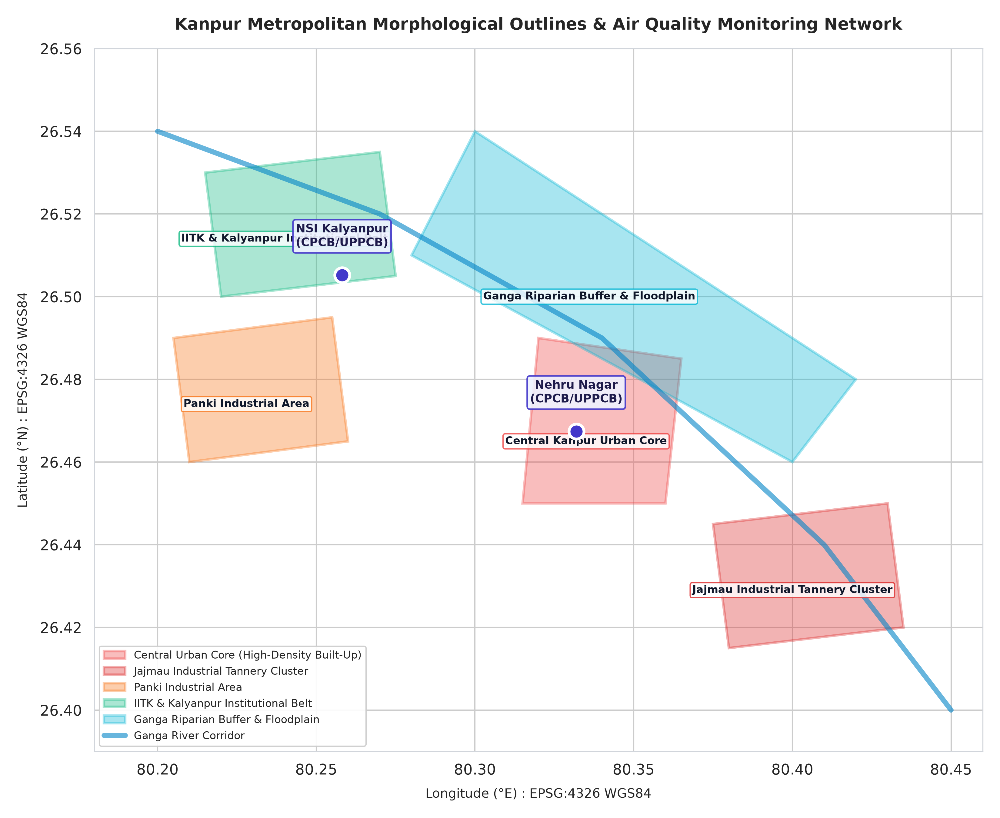

What Weather Reanalysis Is, and What Coarse Grid Cells Cannot See
The difference between global numerical atmospheric simulations and high-resolution satellite radiometry.
It is tempting to look at a thermal map of northern India and assume a satellite pointed a digital thermometer at the pavement. In multi-decade environmental studies, however, surface temperature records usually come from reanalysis systems like NASA GMAO MERRA-2 and the NASA POWER program. Reanalysis is not a collection of photographs. It is a continuous physics simulation of the global atmosphere that runs historical numerical weather models while assimilating millions of real-world observations from weather balloons, ground stations, and orbital sounders.
This approach provides an enormous benefit: an unbroken, multi-decade record of daily surface skin temperature and solar radiation with zero cloud gaps. But that completeness has an important trade-off: spatial resolution. The MERRA-2 grid cell over Kanpur spans 0.5 degrees of latitude by 0.625 degrees of longitude, an area roughly 55 kilometers north-to-south by 60 kilometers east-to-west.
A single 55 by 60 kilometer cell blankets the dense brick core of Kanpur, surrounding agricultural fields, the Ganga River floodplain, and industrial highway corridors together into one average value. Reanalysis can track broad regional heating cycles (showing winter skin temperatures dropping below 8 degrees Celsius while summer peaks at 43.39 degrees), but it cannot detect neighborhood heat islands, tree canopy shade, or asphalt heat storage. Mapping street-level thermal differences requires high-resolution radiometric sensors like the Thermal Infrared Sensor (TIRS) on Landsat 8 and 9 at 100 m native, resampled to 30 m, which is planned future work.

Sensors Comparison: Reanalysis vs Radiometers
NASA MERRA-2 / POWER: ~55 x 60 km grid, daily continuous time series from 1981 to present, zero missing days due to clouds, assimilated assimilation model output.
Landsat 8/9 TIRS: 100 m native, resampled to 30 m spatial resolution, 16-day orbital revisit cycle, subject to cloud-masking and haze attenuation.